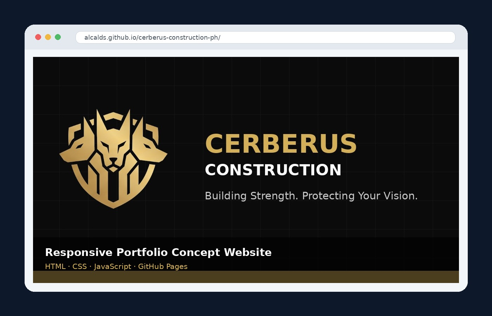

Data Analysis and Reporting
Data cleaning, validation, consolidation, spreadsheet reporting, PivotTables, Power Query workflows, dashboards, statistics, and management presentations.
Data · Reporting · Workflow Automation
Data, Reporting and Workflow Automation Specialist
Remote Operations and Administrative Support
I help organizations organize records, improve spreadsheet reporting, and automate repetitive administrative workflows using Microsoft Excel, Google Workspace, Power Query, and Google Apps Script.
Backed by government-service experience in documentation, case monitoring, records management, compliance support, research, and professional reporting. Additional support is available for responsive website development, presentation design, digital content, and AI-assisted productivity.
About me
I am a data, reporting, and workflow automation professional with government-service experience since 2019. My work involves monitoring records, validating information, consolidating reports, preparing formal documentation, maintaining accountability systems, and presenting data for management use.
I develop practical solutions using Microsoft Excel, Power Query, Google Sheets, Gmail, Google Drive, and Google Apps Script. My goal is to improve the accuracy, organization, visibility, and efficiency of recurring administrative processes.
I also provide supporting digital services involving responsive websites, presentation design, research, professional documents, and AI-assisted productivity.
Capabilities
My primary capabilities center on accurate data, organized records, useful reports, and practical automation. Web, design, and AI-assisted tools provide additional digital support.
Data cleaning, validation, consolidation, spreadsheet reporting, PivotTables, Power Query workflows, dashboards, statistics, and management presentations.
Google Apps Script solutions for Gmail, Google Drive, Google Sheets, automated file organization, communication tracking, recurring workflows, and administrative process improvement.
Structured records management, compliance monitoring, case or project tracking, document classification, deadline tracking, file organization, and reporting support.
Memoranda, reports, correspondence, research, standard operating procedures, presentations, summaries, and professionally formatted business documents.
Responsive HTML, CSS, JavaScript, GitHub Pages, Wix website design, WordPress content management, website maintenance, and content formatting.
Presentation design, graphics, publication layouts, visual content, research support, and responsible use of AI tools to improve productivity and output quality.
Selected work
Public-facing projects are linked below. Internal project descriptions remain summarized to protect confidential information.
Designed and deployed a privacy-conscious workflow using Google Apps Script, Gmail, Google Drive, and Google Sheets. The live process runs every 10 minutes, classifies and stores incoming attachments, prevents duplicate records, and updates a centralized tracker. A controlled historical backfill covering January 2024 through June 2026 was completed from July 21 to July 27, 2026.
Demonstrates how recurring submissions from 18 reporting units can be combined, standardized, validated, summarized, and translated into management-ready findings. All public records, dates, figures, and unit labels shown in the case study are fictional.
Demonstrates how raw source material is structured, edited, formatted, reviewed, and prepared for professional release. The case study includes a downloadable three-page fictional work sample with a memorandum, publication excerpt, revision matrix, and quality-assurance checklist.
FORMAL MEMORANDUM
1. Purpose
2. Required actions

Open live demo ↗Designed, developed, and published a responsive construction-company concept website as a portfolio demonstration. The project uses a premium black-and-gold visual identity, structured service information, project inspiration, responsive navigation, and a safe demonstration inquiry experience.
Served as final editor, compiler, and formatting contributor for a completed institutional reference containing relevant laws, policies, rules, and government issuances intended for selected personnel.
Supported revision coordination, meetings, content review, final editing, and prescribed-template formatting. The proposed revision addressed complex legal and operational safeguards intended to minimize procedural lapses and case dismissals.
Served as final editor and formatting contributor for a manual describing the organization’s administrative responsibilities, operational functions, processes, and work procedures.
Used Excel and Power Query to standardize names, identify duplicates, cross-reference records, and prepare structured summaries from large datasets.
Produced edited photographs, background-removal outputs, presentation covers, publication assets, and professional document layouts.
Designed and developed this responsive portfolio to present my professional background, capabilities, deployed solutions, web projects, publications, technical tools, and downloadable application documents.
Tools and platforms
Proficiency varies by tool; the portfolio emphasizes where each application supports real work.
Building, editing, maintaining, and organizing digital projects.


Organizing information, improving processes, and reducing repetitive work.


Creating visual materials, planning ideas, and collaborating on layouts.


Assisting research, drafting, ideation, planning, and digital content creation.


Experience
My background combines data validation, reporting, records management, workflow automation, professional documentation, compliance support, case monitoring, coordination, and practical process improvement.
Philippine National Police
Office of a Member of the House of Representatives
Credentials and résumé
Updated public résumé and public CV versions are available for download. Private contact details remain excluded from the website.
Laguna State Polytechnic University
2013–2017Application documents
Both public documents exclude my mobile number and complete residential address. A private version may be provided for verified opportunities.
Roles I can support
Contact
Use the form below for opportunities involving data and reporting, workflow automation, operations support, documentation, records management, website or digital-project support, collaboration, or requests for private application documents.